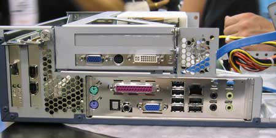
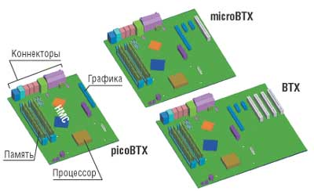
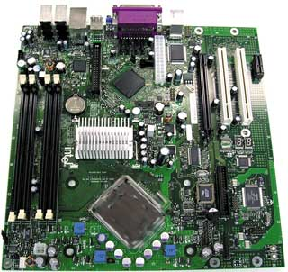
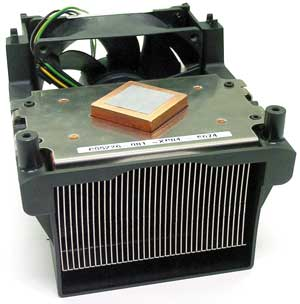
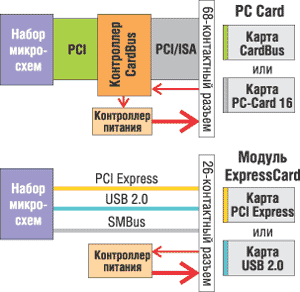
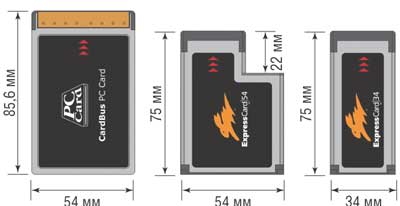
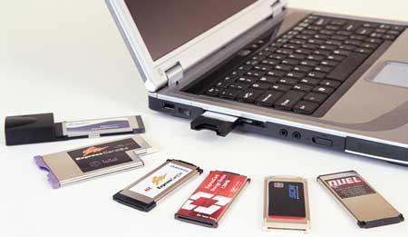

Алексей Борзенко,
к. т. н., доцент РРТА
С момента появления настольных ПК внешний вид системных блоков не слишком изменился. Если параметры внутренних компонентов - скорость работы процессора, объем оперативной памяти, емкость жесткого диска - выросли в среднем на три порядка (соответственно от мегагерц к гигагерцам, от килобайтов к мегабайтам, от мегабайтов к гигабайтам), то конструктивные особенности системных блоков ПК, конечно, менялись со временем, но не столь существенно. На различных выставках и конференциях (например, на Форуме Intel для разработчиков) часто можно увидеть модифицированные ПК, собранные в необычных корпусах. Однако модификация системных блоков ПК - это скорее искусство, чем технология. И несерьезный вид этих произведений не должен сбивать с толку.
Дело в том, что в число основных задач, решаемых разработчиками современных ПК, входят и проблемы тепло- и массообмена в корпусах. Эффективность обмена, в частности, достигается специальной компоновкой как самих корпусов с блоками питания, так и предназначенных для них системных плат, а также точным расчетом естественной и принудительной вентиляции. Надо сказать, что подобные задачи далеко не новы и успешно решаются уже довольно давно - с момента появления бортовой радиоэлектронной аппаратуры. Впрочем, при разработке современных ПК добавляется еще одна задача - обеспечить их бесшумную работу.
Кроме того, особенно в случае корпоративных ПК, часто ставится задача создания "самодостаточных" машин, конфигурация которых включает все необходимые компоненты. Это связано с тем, что модернизация таких ПК бывает невозможна (по конструктивным соображениям) или просто нежелательна, так как сопряжена обычно с остановкой работы и открытием корпуса для удаления старых и добавления новых компонентов. Подобные ПК, не допускающие, в частности, установки дополнительных плат расширения, обычно называют sealed PC - "запечатанные" ПК. Однако как в существующих, так и в будущих компьютерных системах потребность в средствах расширения, разумеется, никуда не девается. Для расширения могут служить, например, подключаемые модули различных форм-факторов, используемые как для обеспечения стандартных конфигураций систем, так и для быстрой модернизации.
Ниже мы рассмотрим две технологии, которые в ближайшее время могут изменить не только внешний вид, но и внутреннюю компоновку выпускаемых ПК.
Сбалансированная технология
В ноябре прошлого года был официально представлен стандарт BTX (Balanced Technology Extended) - и фактически сразу же вслед за этим начались продажи компьютерных систем на базе новой спецификации (рис. 1). По имеющейся информации, новый форм-фактор BTX получает все большую поддержку в отрасли настольных ПК - среди производителей систем, корпусов, системных плат, систем охлаждения и источников питания. Сегодня многие ведущие производители уже приняли спецификации BTX и предлагают на рынке решения для нового форм-фактора. В их числе компании AOpen, ASUS, AVC, Chenbro, Evercase, FIC, FSP, Foxconn, HIPRO, Gigabyte, MiTAC, MSI, Shuttle, TaiSol, Thermaltake, Yeong Yang и другие.
|  |
| Рис. 1. Прототип ПК с форм-фактором BTX.
|
Первые ПК форм-фактора BTXИзвестный американский производитель ПК, корпорация Gateway Computers (http://www.gateway.com), сразу после объявления стандарта BTX анонсировала новую линейку настольных ПК для сферы бизнеса, относящуюся к E-серии. Эта линейка интересна тем, что одна из входящих в нее моделей, E-6300, выполнена в форм-факторе BTX. Как подчеркивалось в заявлении компании, она стала первым из ведущих производителей, выпустившим BTX-систему для бизнес-сегмента. Упомянутый ПК построен на наборе микросхем Intel 915G и оснащен процессором Intel Pentium 4 HT с частотой внешней шины 800 МГц, оперативной памятью DDR2 400 объемом до 4 Гбайт и жестким диском Serial ATA емкостью до 250 Гбайт.
|
С конца прошлого года корпорация Intel (http://www.intel.com) поставляет компоненты для построения настольных ПК в стандарте BTX, включая процессоры в штучной упаковке с системой охлаждения, совместимой с BTX, в том числе Intel Pentium 4 моделей 530J, 550J и 560J с технологией Hyper-Threading. Кроме того, начались поставки двух конфигураций системной платы в штучной упаковке для настольных ПК - Intel D915GMH с форм-фактором microBTX. Эти платы позиционируются в основном как оптимальное решение для цифрового дома и офиса. До этого времени ПК в стандарте BTX были доступны только от поставщиков комплектного оборудования.
На первый взгляд, новинки на базе BTX имеют лишь незначительные внешние отличия от привычного семейства ATX, однако это не совсем так. Дело в том, что отраслевой стандарт ATX (Advanced Technology Extended) был разработан еще в 1995 г., и с тех пор технологии в своем развитии прошли уже долгий путь. К тому же появилось много новых проблем, которые становится все труднее решить в рамках существующего стандарта. Вообще говоря, спецификации BTX создавались как развитие стандарта ATX и были направлены именно на решение возникших проблем.
Отметим, что термин "форм-фактор" используется в компьютерной промышленности в различных значениях. Часто он употребляется для обозначения общих размеров и формы вычислительной системы. Иногда под форм-фактором подразумевают размеры и форму стандартных компонентов. Компоненты стандартного форм-фактора легко воспроизводить, обеспечивая при этом удобство компоновки различных элементов, при разработке широкого диапазона систем. Такая стандартизация позволяет создавать серии ПК для различных схем использования.
Дебаты, касающиеся разработки новых форм-факторов, не прекращались с момента выхода спецификации ATX, и в итоге сформировалась концепция, в которой были заложены базовые принципы, вылившиеся позже в спецификацию BTX. Уже в начале 2004 г. была представлена первая черновая версия новой спецификации, а в середине лета состоялась официальная презентация финального варианта The Balanced Technology Extended (BTX) 1.0 Public Release. В этом документе не только подробнейшим образом описаны все требования к BTX-системам, но и детально определяются граничные параметры соответствия стандарту и приводятся подробные характеристики тестового оборудования. В настоящее время на сайте http://www.formfactors.org можно ознакомиться с версией 1.0а этой спецификации.
Как следует из документа, стандарт BTX разработан с целью стандартизации интерфейсов и определения форм-факторов для настольных вычислительных систем в области их электрических, механических и термических свойств. Документ действительно описывает механические и электрические интерфейсы для разработки системных плат, шасси, блоков питания и других системных компонентов. В частности, спецификация BTX предлагает разработчикам ряд важнейших преимуществ, в числе которых: поддержка низкопрофильных конструкций, оптимальная компоновка, варьирование размеров системных плат, механизм крепления плат. Так, поддержка низкопрофильных конструкций обеспечивает более удобную установку компонентов расширения в системы с тонкими корпусами и компактными форм-факторами. Кроме того, новая компоновка обеспечивает более плотное расположение компонентов на системной плате и лучшее охлаждение системы благодаря оптимальной циркуляции воздуха. Компоновка устраняет преграды на пути воздушного потока и обеспечивает надлежащее охлаждение компонентов системы. Оптимизация пути прохождения воздушного потока и применение более качественных вентиляторов позволит снизить число последних, что дополнительно улучшит акустические параметры системы и уменьшит ее габариты.
Благодаря гибкости при выборе системных плат разработчики могут использовать одни и те же компоненты для создания систем разных габаритов и конфигураций. В ультракомпактных системах могут применяться меньшие по размеру и более эффективные блоки питания. Механические характеристики системных плат нового форм-фактора обеспечивают достаточную прочность для крепления тяжелых элементов, например, теплоотводов. Благодаря более прочной конструкции тяжелые элементы не сгибают системную плату и не повреждают ее компоненты и контакты во время транспортировки.
Форм-факторы BTX
В настоящее время чаще всего приходится сталкиваться с системными платами форм-факторов ATX и microATX - именно они используются в большинстве предлагаемых сегодня ПК. Эти форм-факторы определяют размеры системных плат, допустимое пространство, занимаемое различными компонентами, и расположение монтажных отверстий - элементов платы, непосредственно связанных с корпусом системы и блоком питания. Спецификация BTX помогает стандартизовать описанные механические параметры сопряжения, общие для форм-факторов ATX и microATX. Однако отличительная ее особенность - поддержка системных плат самых разных размеров. Эта спецификация не только обобщает спецификации ATX, microATX и их варианты, но и описывает более широкий диапазон размеров системных плат, созданных на основе единой базовой конструкции.
Спецификация BTX более гибка, чем ATX и microATX, поскольку, в дополнение к разнообразным размерам системных плат, она также регламентирует различные высоты системных компонентов. В ней определено, что разработчики могут использовать две высоты системных компонентов. Стандартная высота практически совпадает с высотой, специфицированной для семейства форм-факторов ATX. Кроме стандартной, спецификация BTX описывает высоту для низкопрофильных компонентов, применяемых в тех случаях, когда важно минимизировать общие размеры системы.
Стандартом регламентируются три базовых форм-фактора системных плат и корпусов (рис. 2), однако на деле подразумевается поддержка гораздо большего числа различных типоразмеров. Все платы имеют одинаковую глубину (266,7 мм), а вот ширина их может существенно меняться. Так, стандартная полноразмерная плата BTX имеет ширину 352,12 мм; на ней устанавливается семь слотов для плат расширения (один - для видеокарты PCI Express x16, два - для карт PCI Express x1 и четыре - для обычных PCI-карт).
|  | Рис. 2. Форм-факторы системных плат BTX.
|
Второй типоразмер называется microBTX; максимальная ширина одноименной системной платы составляет 264,16 мм. На такой плате предусмотрен монтаж до четырех слотов расширения, из которых один - PCI Express x16, два - PCI Express x1 и всего один - для карт PCI. Плата данного формата показана на рис. 3.
|  | Рис. 3. Системная плата microBTX.
|
Третий типоразмер носит название picoBTX. Ширина системной платы этого формата не должна превышать 203,2 мм. В компьютер на базе такой платы можно будет установить всего одну плату расширения с интерфейсом PCI Express x16, других слотов для плат расширения на плате picoBTX просто не предусмотрено.
Надо отметить, что размещение основных компонентов на платах BTX отличается от привычных ATX. Так, разъем процессора размещен у самого края платы, причем расположен он не параллельно сторонам, а повернут на 45?. Так же устанавливаются и микросхемы набора системной логики. А вот слоты для двухканальной оперативной памяти и соединители для плат расширения разнесены по разные стороны платы.
В целом стоит отметить, что, несмотря на наличие как минимум трех проработанных форм-факторов - BTX, microBTX и picoBTX, разработчики Intel сразу предложили две базовые референсные модели BTX-систем, отличающиеся друг от друга объемом корпуса и некоторыми элементами обвязки, - S1 (12.9L) BTX Reference Design (BTX) и S2 (6.9L) BTX Reference Design (picoBTX). Емкость корпусов их нормируется в проектном объеме 12,9 и 6,9 дм3 соответственно. Для каждой из платформ тщательно просчитан тепло- и массообмен и даны подробные рекомендации по компоновке элементов.
Для реализации спецификации BTX в системном блоке должны появиться два новых компонента: модуль теплового баланса (Thermal Module) и поддерживающий модуль, или SRM-модуль (Support and Retention Module).
Модуль теплового баланса
Модуль теплового баланса представляет собой массивный процессорный радиатор, помещенный в кожух со встроенным вентилятором, который втягивает в систему "забортный" воздух. По замыслу разработчиков, этот вентилятор будет забирать воздух с передней стороны системного блока, для чего на лицевой панели должны быть предусмотрены специальные отверстия. Кожух модуля теплового баланса позволяет с минимальными потерями довести поток "забортного" воздуха к размещенным линейно компонентам системного блока и вывести нагретый воздух за пределы системы. При этом для эффективного охлаждения не требуется дополнительных корпусных вентиляторов.
Спецификация BTX определяет два различных значения габаритной высоты для модулей теплового баланса, т. е. два типоразмера модуля: модуль Тип I и модуль Тип II. Низкопрофильный вариант модуля теплового баланса - Тип II - предназначен для сверхтонких конструкций корпусов. Малый размер корпуса подразумевает не только малогабаритный вентилятор, но и соответствующий радиатор теплоотвода. Модули Тип I (рис. 4) также делятся на два вида - первый рассчитан на массовые компьютерные системы и оснащен прямоугольным радиатором с медным основанием, а второй предназначен для высокопроизводительных систем и снабжен цилиндрическим радиатором с медной сердцевиной. В модулях Тип II используются только традиционные прямоугольные радиаторы.
Для высокопроизводительных системных конфигураций, использующих более объемные корпуса, предусмотрен полноразмерный модуль теплового баланса Тип I с большей габаритной высотой. Два предусмотренных спецификацией высотных значения для зон А (сверху системной платы) и зон F (спереди системной платы) позволяют размещать модули теплового баланса обоих типов.
Электронно-механические элементы сопряжения с системной платой, включая разъем и схему стабилизации напряжения питания процессора, у модулей теплового баланса Тип I и Тип II идентичны. В модуле Тип I используется 90-мм вентилятор, а в модуле Тип II - 70-мм. Отличаются и объемы воздуха, которые способны перекачивать модули двух типов. При обдуве процессора модуль Тип I обеспечивает производительность 40 cfm (кубических футов воздуха в минуту), а модуль Тип II - 30 cfm. При этом, однако, оба модуля гарантируют поддержание одинаковой температуры процессора - 36?C.
|  | Рис. 4. Модуль теплового баланса Тип I.
|
Особо отметим, что модули теплового баланса Тип I и Тип II в корпусе ПК занимают пространство не только сверху системной платы, но и перед ней. Это позволяет размещать вентилятор модуля перед системной платой и тем самым формировать три различных направления воздушного потока - через радиатор центрального процессора, через схему стабилизации напряжения питания процессора (между нижней плоскостью радиатора процессора и верхней плоскостью системной платы), а также вдоль нижней (противоположной) плоскости системной платы. Характеристики этих потоков приведены в табл. 1. Каждый из трех воздушных потоков одинаково важен для обеспечения оптимального теплового баланса системы. Фронтальная зона системной платы также позволяет "выдвинуть" крепежный SRM-модуль за пределы ее переднего края в целях эффективной компенсации инерционной нагрузки на радиатор процессора при механическом ударе.
Шасси каждого корпуса должно иметь стандартные механические элементы сопряжения для установки модуля теплового баланса. На панелях корпуса, наряду с вентиляционными отверстиями, должны быть также предусмотрены установочные элементы для монтажа воздуховода (пластиковой трубки), по которому в модуль теплового баланса будет поступать внешний воздушный поток. Применение воздуховода обусловлено тем, что на вход модуля теплового баланса должен поступать именно "забортный" воздух. Входной конец трубы воздуховода может крепиться на поверхности любой панели корпуса - верхней, нижней или боковых. Важно, чтобы все установочные элементы сопряжения шасси были приспособлены для монтажа обоих (Тип I и Тип II) конструктивных исполнений модуля теплового баланса.
Таблица 1. Предельные значения характеристик воздушного потока
| Компонент | Форм-фактор BTX | Форм-фактор ATX | ||
| Воздушный поток | Температура, град. C | Воздушный поток, м/мин | Температура, град. C | |
| Процессор | 1,12 м3/мин (Тип I); 0,84 м3/мин (Тип II) | 36 | 45,8 | 38 |
| Схема стабилизации напряжения питания процессора | 0,12 м3/мин (Тип I); 0,1 м3/мин (Тип II) | 36 | 15,3 | 50 |
| MCH | 88,5 м/мин | 44 | 15,3 | 55 |
| ICH | 48,8 м/мин | 50 | Естественная конвекция | 60 |
| Графический адаптер | 1,1 м/мин | 44 | Естественная конвекция | 55 |
| Память | 15, 3 м/мин | 46 | 15,3 | 55 |
| Отсеки для дисководов | Естественная конвекция | 55 | Естественная конвекция | 55 |
SRM-модуль
Модуль SRM - основной конструктивный компонент любой BTX-системы. Главное его назначение - компенсация инерционной нагрузки на радиатор охлаждения центрального процессора, которая может возникать при механическом ударе или падении ПК. SRM-модуль перераспределяет эту нагрузку на самые жесткие элементы конструкции шасси, минимизируя изгиб системной платы и предотвращая повреждение ее электрических проводников и компонентов. Единое конструктивное исполнение SRM-модуля позволяет применять его с любыми модификациями форм-фактора BTX, гарантируя надежную работу системы благодаря повышенной прочности крепления массивных элементов компоновки. Поддерживающий модуль, который представляет собой штампованную профилированную металлическую пластину, повышает устойчивость системы к ударам и толчкам и препятствует прогибу системной платы, за счет чего можно увеличить максимально допустимую массу процессорного радиатора с 450 г (в спецификации ATX) до 900 г.
Корпуса и блоки питания
Новый стандарт позволяет не только организовать более логичное и эффективное охлаждение, но и собирать мощные машины в корпусах небольших габаритов. В самом миниатюрном корпусе SFF (Small Form Factor) предусмотрено по одному 5,25- и 3,5-дюйм отсеку, а системная плата должна иметь типоразмер picoBTX. Многие эксперты полагают, что самым популярным станет типоразмер microBTX. Этот корпус, обозначенный в спецификации как Desktop, близок по размерам к одноименным компактным ATX-корпусам, которые используются в первую очередь для сборки офисных компьютеров. В нем также имеется всего один 5,25-дюйм и один 3,5-дюйм отсек, а в качестве системной платы используется почти квадратная microBTX. В самом большом корпусе - Expandable Tower, который по размерам ближе всех к корпусам Midi Tower, предусмотрено не менее двух 5,25-дюйм и двух 3,5-дюйм отсеков для накопителей, а устанавливаться в него будут полноразмерные системные платы BTX.
Для новых типов корпусов разработаны и новые стандартные блоки питания, отличающиеся размерами. Если в полноразмерных корпусах еще можно применять обычные блоки питания ATX12V, то в корпусах уменьшенных габаритов будут работать новые варианты. Модель CFX12V рассчитана на корпуса уменьшенных габаритов (объемом 10-15 дм3), а модель LFX12V - на самые миниатюрные корпуса (объемом 6-9 дм3). В разных блоках питания применяются и разные вентиляторы, от возможностей которых зависит эффективное охлаждение системы в целом.
Как отмечается в тексте спецификации, разъемы электропитания и интерфейсов будут полностью совместимы с теми, что используются в современных ATX-корпусах. Тем не менее в стандартный 24-контактный разъем в соответствии со спецификацией CFX12V добавлены целых четыре контакта - 3,3 В, 5 В, 12 В и "земля"). Впрочем, BTX-система должна работать и с обычным современным блоком питания ATX.
Основные преимущества BTX
Масштабируемость
BTX поддерживает широкий диапазон размеров корпусов, системных плат, источников питания и систем охлаждения со стандартными интерфейсами. Уже были продемонстрированы системы, включающие самые разные сочетания компонентов в стандарте BTX и выполненные в таких конструктивных вариантах, как компактный вертикальный корпус (Slim Tower), компактный настольный корпус (Slim Desktop), малый форм-фактор (Small Form Factor), куб (Cube), мини-башня (Mini Tower), настольный корпус (Desktop) и развлекательный ПК (Entertainment PC).
Усовершенствованная система охлаждения
Стандарт BTX предполагает, что компоненты с высоким энергопотреблением размещаются в ряд. Благодаря этому можно использовать для их охлаждения один и тот же высокоскоростной поток воздуха с низкой температурой, который распространяется от передней панели системы к задней. В системах, совместимых с BTX, улучшен теплообмен компонентов, критических для управления напряжением питания процессора, и самого разъема процессора благодаря усилению воздушного потока в той области, где размещен процессор. Организация расположения компонентов подчинена одной идее: прямой поток воздуха, не встречая препятствий (без всяких завихрений), должен проходить через самые "горячие" комплектующие. От процессора к радиатору системной логики, обдувая модули памяти и видеокарту, воздух движется к блоку питания, в котором вентилятор работает на выдув.
Пониженный уровень шума
При разработке стандарта BTX особое внимание уделялось уменьшению сопротивления воздуха внутри корпуса. Это позволило сократить общее число вентиляторов и уменьшить скорость их вращения. В результате понизился уровень шума.
Усовершенствованная компоновка системной платы
Компоновка BTX предусматривает больше свободного пространства для размещения цепей питания процессора, а также уменьшает сложность трассировки печатных проводников, соединяющих контроллер памяти с памятью и контроллер ввода-вывода с разъемами ввода-вывода на задней панели. За счет сокращения числа компонентов улучшилось охлаждение системы управления напряжением питания процессора.
Улучшенная надежность конструкции
Спецификация BTX вводит концепцию крепежного модуля SRM, предусматривающую использование единого сборочного элемента сопряжения для всевозможных форм-факторов и системных конфигураций. Этот стандартный компонент уменьшает вероятность отказов системы в результате механического удара, вибрации или долгосрочного тестирования на надежность, которые могут стать причиной искривления системной платы.
Выигрыш в стоимости
Компоновка BTX обеспечивает пониженную рабочую температуру; высокая скорость воздушного потока позволяет применять более простые и дешевые технологии для отвода тепла. В компактных системных блоках можно использовать стандартные компоненты вместо специализированных.
Последовательные шины
Компьютерные системы продолжают совершенствоваться не только в плане разнообразия конструктивных решений и снижения энергопотребления; развиваются и технологии подключения компонентов. Это связано с тем, что, например, мобильные устройства должны соответствовать или даже превосходить настольные ПК по компактности, энергетической эффективности и функциональности. Растет и потребность в новых функциях, причем это касается не только мобильных, но и настольных систем. Все существующие системы в лучшем случае предлагают лишь частичное, временное решение, не удовлетворяющее всем современным требованиям. Гнезда для подключаемых компонентов и шины позволяют владельцу ПК пользоваться устройствами и технологиями, которых еще не было на момент проектирования или покупки машины.
Сегодня в тенденциях развития архитектуры как портативных, так и настольных компьютеров заметно влияние растущих возможностей последовательных шин. Причина такой смены акцентов, на первый взгляд, кроется в невысоких требованиях последовательных шин к числу контактов. Однако помимо малого числа выводов у последовательных шин есть и другие, может быть, менее очевидные, но очень важные преимущества. Вообще говоря, множественные последовательные потоки данных между компонентами могут потребовать большей пропускной способности, чем в состоянии обеспечить одна параллельная шина, совместно используемая большим количеством подсистем. Такая шина зачастую работает непроизводительно по причине неэффективного протокола (например, из-за переизбытка арбитражных операций) - выделенные или слабо нагруженные последовательные шины с такими трудностями не сталкиваются. Кроме того, последовательные шины допускают передачу данных между отдельными парами конечных точек, позволяя не загружать единую (широкую) шину излишним трафиком, который лучше пересылать локально.
Многие современные последовательные шины поддерживают выделение гарантируемой ширины полосы пропускания для отдельных пар источник - приемник. Такой изохронный режим очень важен для успешной транспортировки данных, для которых задержка с передачей недопустима, например, звука или видео. Более ранние параллельные шины такого механизма не поддерживают и потому менее пригодны для обслуживания мультимедиа-данных, которые обычно обрабатываются устройствами бытовой электроники и пересылаются через Интернет.
На сегодняшний день в ИТ-отрасли существуют две перспективные последовательные шины: PCI Express и USB. Многочисленные исследования PCI-технологии передачи сигналов показали, что параллельная реализация шины близка к своему пределу производительности: в ней затруднено масштабирование вверх по частоте и вниз по напряжению, синхронизация передачи данных ограничена величиной расфазировки синхронизирующих импульсов, а правила маршрутизации импульсов находятся на пределе рентабельности технологии. Все попытки устранить эти ограничения и создать шину ввода-вывода с более широкой полосой пропускания ведут к росту стоимости, несоизмеримому с повышением производительности.
В PCI Express (ранее известной как 3GIO) сохранены самые важные параметры PCI, такие, как функциональная модель и программные интерфейсы, однако снято ограничение на пропускную способность. Архитектура ввода-вывода третьего поколения представляет собой универсальную архитектуру последовательного типа с малым числом контактов, производительность которой ограничивается исключительно технологическими особенностями соединений. При этом данная архитектура с равным успехом может применяться в настольных и мобильных системах, серверах, коммуникационных устройствах и встроенных приложениях. Базовый физический уровень (PCI Express x1) состоит из двойного канала (прием-передача), который реализован в виде пар проводников - принимающей и получающей. Исходная скорость передачи 2,5 Гбит/с в каждом направлении обеспечивает канал связи со скоростью передачи данных до 250 Мбайт/с - это примерно в два раза выше, чем у стандартной шины PCI.
Стандарт USB разработан отраслевым консорциумом компаний, в который входили Intel, Microsoft, Compaq, NEC, DEC, IBM и Northern Telecom. Сегодня USB-IF (USB Implementers Forum, http://www.usb.org), сообщество участвующих в разработке спецификаций USB компаний, объединяет несколько сотен производителей вычислительной техники. Шина USB состоит из иерархии концентраторов, или точек подключения USB-устройств. На базовой системе имеется порт корневого концентратора, который выполняет роль "корня" для "дерева" шины. Управляющие пакеты и пакеты с данными пересылаются по "веткам" этого дерева между базовой системой и отдельными USB-устройствами. Выпущены три версии спецификации USB: 1.0, 1.1 и 2.0. Версия 1.1 - это просто исправление начального варианта стандарта. Версия 2.0 была принята в апреле 2000 г.; она предусматривает существенное увеличение быстродействия по сравнению с USB 1.x и обратно совместима с устройствами на базе USB 1.1. Версии 1.x поддерживают быстродействие 12 Мбайт/с, а версия 2.0 теоретически может обеспечить до 480 Мбайт/с. Такое 40-кратное повышение скорости передачи данных позволяет существенно расширить сферу применения USB.
Спецификации PCMCIAВпервые универсальный компактный интерфейс для подключения внешних устройств к портативным компьютерам, первая версия которого (release 1.0) появилась в августе 1990 г., был предложен организацией Personal Computer Memory Card International Association (PCMCIA, http://www.pcmcia.org). В следующих версиях спецификации (2.0 и 2.01) PCMCIA-модуль стали называть просто PC Card. Стандарт для связи между PC Card и соответствующим устройством (адаптером или портом компьютера) определял 68-контактный механический соединитель. На нем было выделено 16 разрядов под данные и 26 разрядов под адрес, что позволяло непосредственно адресовать 64 Мбайт памяти. Спецификация PCMCIA задавала три типа габаритных размеров для PC Card (Type I, Type II и Type III). Два первых типа ограничивали размеры PC Card значениями 54 мм (2,12 дюйма) в ширину и 85,6 мм (3,37 дюйма) в длину. PCMCIA-модули, соответствующие Type I, должны иметь толщину 3,3 мм, а соответствующие Type II - 5,0 мм в середине и 3,3 мм по краям. Труднопроизносимая аббревиатура PCMCIA всегда вызывала много нареканий. Существовала даже шутливая интерпретация PCMCIA как People Can't Memorize Computer Industry Acronyms ("Человек не в состоянии запомнить компьютерные аббревиатуры").
Сам стандарт стал носить имя PC Card Standard только с 1995 г. (release 5.0). Именно в то время была предложена спецификация CardBus - расширение шины PCI для устройств PC Card. Проведя параллель между шинами блокнотных и настольных ПК, можно сказать, что интерфейс CardBus - это эквивалент шины PCI (их характеристики сопоставлены в табл. 2), а интерфейс PCMCIA - аналог традиционной 16-разрядной шины ISA. Платы CardBus поддерживали 32-разрядный обмен данными на частоте 33 МГц. В этом конструктиве и сегодня выпускаются, например, 100-Мбит сетевые карты, интерфейсные платы SCSI и другие устройства, требующие быстрого обмена по шине. Таблица 2. Сравнение PCI и CardBus
Сегодня технологии PCMCIA по-прежнему активно используются в мобильных вычислительных системах - от высокопроизводительных, полноразмерных мобильных компьютеров до сверхпортативных специализированных устройств, таких, как электронные записные книжки и фотоаппараты. Семейство PC Card объединяет 16-разрядные платы, используемые в устройствах с невысокими требованиями к производительности, и 32-разрядные PCI-подобные платы CardBus, которые способны удовлетворить более высокие требования к подсоединению компонентов.
|
Технология ExpressCard
Сегодня вряд ли можно точно предсказать, какие конкретные устройства или приложения понадобятся в компьютерах завтрашнего дня, но одно известно наверняка: технологии для мобильных систем на достигнутом уровне не останутся - это противоречило бы всей истории компьютерной отрасли. Возможность подключения компонентов к существующим системам особенно важна для поддержки стандартных конфигураций, например, в тех корпоративных системах, параметры которых жестко задаются и контролируются ИТ-менеджерами. Даже самодостаточные системы будущего можно будет привести в соответствие с корпоративными стандартами, заменяя подключаемые компоненты. Сокращение числа типов поддерживаемых систем позволяет компаниям повысить их надежность и снизить совокупную стоимость владения.
С выходом новой мобильной платформы Intel должно начаться и полномасштабное внедрение новой технологии ExpressCard (http://www.expresscard.org), символом которой с чьей-то легкой руки стал бегущий оранжевый кролик. Именно эта технология приходит на смену "рабочей лошадке" PC Card, ограничения которой в настоящее время становятся все более очевидными. Так, пропускная способность PC Card недостаточна для телевидения высокой четкости, а также скоростных систем резервного копирования, подключаемых к портативным компьютерам.
О разработке стандарта ExpressCard (некоторое время известного как Newcard) впервые было объявлено в феврале 2003 г. на Форуме Intel для разработчиков. Эта спецификация была создана содружеством OEM-производителей, разработчиков карт и компонентов, среди которых такие известные компании, как Dell, HP, IBM, Intel, Lexar Media, Microsoft, SCM Microsystems и Texas Instruments. Основой совместной разработки стало тесное сотрудничество между рабочими группами организаций PCMCIA, USB-IF и Peripheral Component Interconnect-Special Interest Group (PCI-SIG, http://www.pcisig.com). Дело в том, что в основу спецификации ExpressCard легли архитектура PCI Express и интерфейс USB 2.0 (табл. 3). Блок-схема нового интерфейса (в сравнении с PC Card) показана на рис. 5.
|  | Рис. 5. Блок-схемы интерфейсов PC Card и ExpressCard.
|
Основные преимущества новой технологии заключаются в высокой скорости, малых габаритных размерах и меньшей стоимости. Использование перспективных последовательных интерфейсов позволило достичь максимальной скорости передачи данных ExpressCard на уровне 250 Мбайт/с. Фактически же общая пропускная способность составляет 500 Мбайт/с: по 250 Мбайт/с в направлении к компьютеру и в направлении к периферии. В сравнении с такими характеристиками 132 Мбайт/с, которые обеспечивает спецификация CardBus, не слишком впечатляют. Высокая скорость обмена позволяет в принципе применять интерфейс ExpressCard даже для передачи видеофильмов и несжатых файлов. Для сравнения приведем показатели пропускной способности других распространенных интерфейсов: Gigabit Ethernet - 125 Мбайт/с, FireWire - 100 Мбайт/с.
Таблица 3. Сигналы интерфейса ExpressCard
| Сигнальная группа | Сигнал | Направление | Описание |
| PCI Express | PETp0, PETn0, REPp0, REPn0 | Вход/выход | Дифференциальные пары приемных и передающих линий (х1) |
| PCI Express | REFCLK+, REFCLK- | Вход | Опорный тактовый сигнал |
| PCI Express | PERST# | Вход | Функциональный сигнал RESET |
| Universal Serial Bus (USB) | USBD+, USBD- | Вход/выход | Линии передачи данных USB 2.0 |
| SMBus | SMBDATA, SMBCLK | Вход/выход | Сигналы управления шины SMBus |
| Дополнительные системные сигналы | CPPE# | Выход | Определение модуля PCI Express и управление питанием |
| Дополнительные системные сигналы | CPUSB# | Выход | Определение модуля USB и управление питанием |
| Дополнительные системные сигналы | CLKREQ# | Выход | Сигнал требования опорного тактового сигнала REFCLK (если необходимо) |
| Дополнительные системные сигналы | WAKE# | Выход | Функциональный сигнал события для PCI Express |
| Питание и земля | +3.3V | Первичный источник питания | |
| Питание и земля | +3.3V AUX | Резервный источник питания | |
| Питание и земля | +1.5V | Вспомогательный источник питания | |
| Питание и земля | GND | Обратный провод |
В настоящее время разработано два форм-фактора модулей ExpressCard (рис. 6) - ExpressCard/34 (ширина 34 мм) и ExpressCard/54 (ширина 54 мм). Оба модуля имеют высоту 5 мм, как у стандарта PC Card Type II. Длина модулей составляет 75 мм, что на 10,6 мм меньше, чем у PC Card. Таким образом, габаритные размеры по сравнению с PC Card уменьшены почти на 40%. Выпуск более "широкой" версии модулей обусловлен хотя бы тем, что на рынке присутствуют более широкие устройства под разъем CardBus, например, карты Compact Flash и 1,8-дюйм накопители. При этом модули ExpressCard/34 и ExpressCard/54 обладают одинаковым интерфейсом. Более узкая карта может вставляться в широкий слот (но, разумеется, не наоборот). Каждый слот под модули ExpressCard может обслуживать шины PCI Express x1 и USB 2.0. "Ножевой" разъем (beam-on-blade) допускает около 10 тыс. циклов "подключение-отключение".
|  |
| Рис. 6. Размеры базовых модулей PC Card и ExpressCard.
|
Чтобы расширить функции управления, в состав соединения "слот-карта" добавлена возможность использования интерфейса типа SMBus. Рассеиваемая тепловая мощность для модулей ExpressCard/34 и ExpressCard/54 составляет соответственно 1,3 и 2,1 Вт. Потребление по току от первичного (3.3V), резервного (3.3V AUX) и вспомогательного (1.5V) источников составляет 1000, 250 и 500 мА. Как и предшественники, спецификация ExpressCard поддерживает технологию Plug-n-Play, возможность горячей замены и автоматическую настройку конфигурации.
Первые ExpressCard-модули (рис. 7) можно было увидеть еще в начале прошлого года, например, на выставке CeBIT в Ганновере. Среди представленных прототипов были продукты компаний AboCom Systems, Lexar Media, M-Systems, SCM Microsystems и Tai-Sol Group. По мнению разработчиков, интерфейс PCI Express будут использовать ExpressCard-модули скоростных проводных сетей, широкополосных модемов, телевизионных тюнеров и декодеров, накопителей на магнитных дисках. В свою очередь, возможности USB 2.0 будут реализованы в модулях проводных и беспроводных сетей, флэш-памяти, безопасности, оптических накопителей, GPS-приемников и т. д.
|  |
| Рис. 7. Модули ExpressCard.
|
Широкое использование нового интерфейса стало возможным c выпуском набора микросхем Intel 915 Express (Alviso). Выделенный хост-контроллер теперь не нужен, так как южный мост этого НМС (ICH6-M) оснащен, помимо прочего, интерфейсом для компактных карт расширения стандарта ExpressCard. Специалисты полагают, что новый интерфейс позволит производителям экономить от 5 до 10 долл. на каждый компьютер. Однако из-за несовместимости карт PC Card с новым интерфейсом в течение 2005 и 2006 гг. наряду со слотами ExpressCard в устройствах будут по-прежнему монтироваться и слоты PC Card (CardBus).